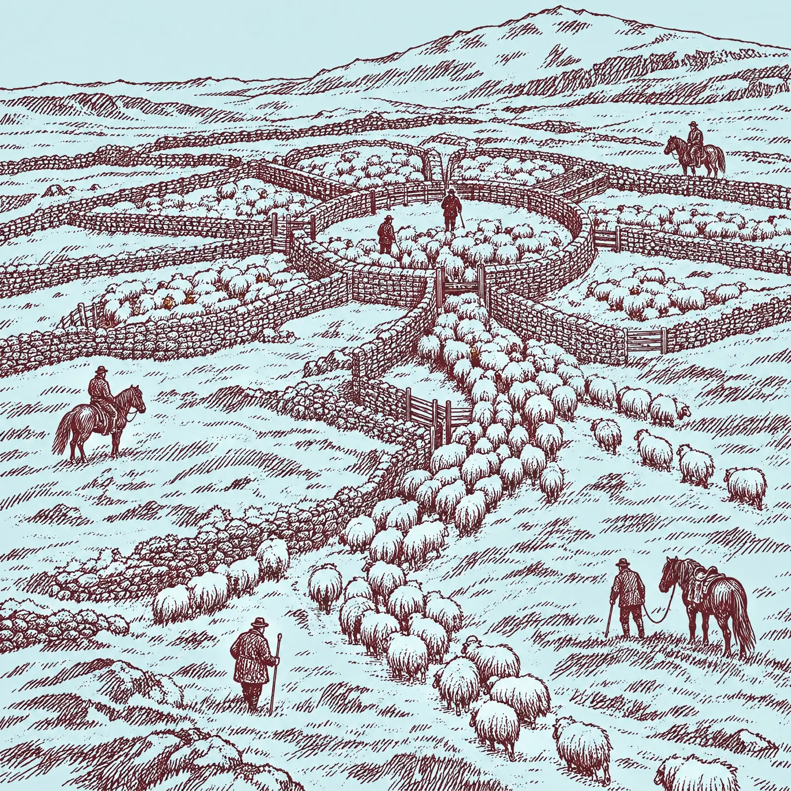
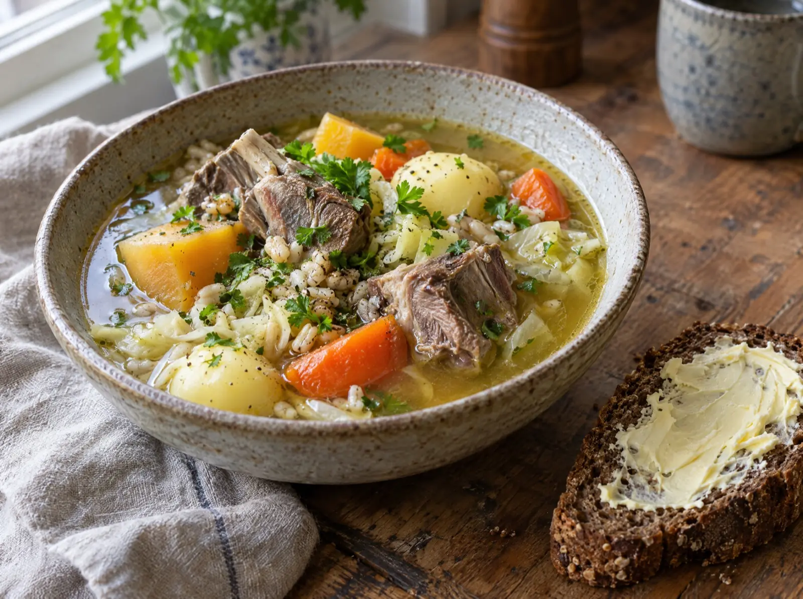
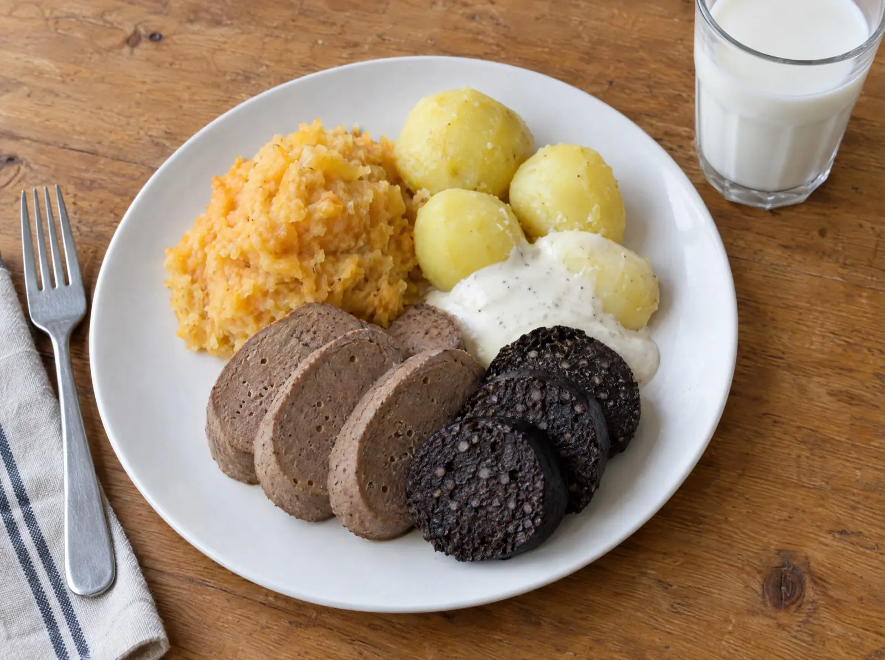
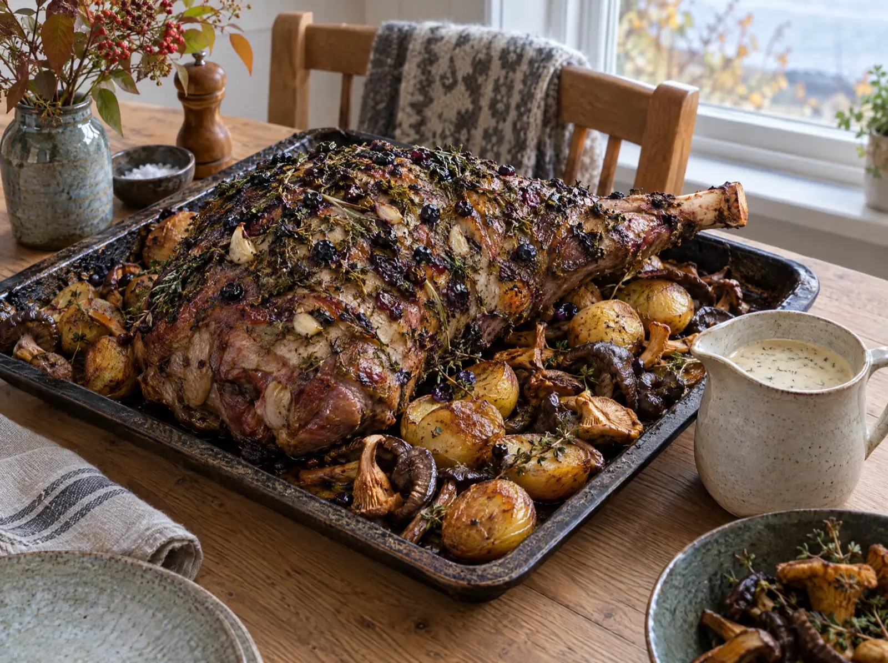
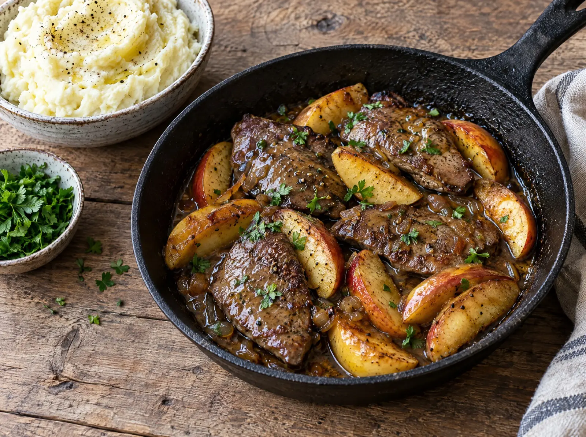
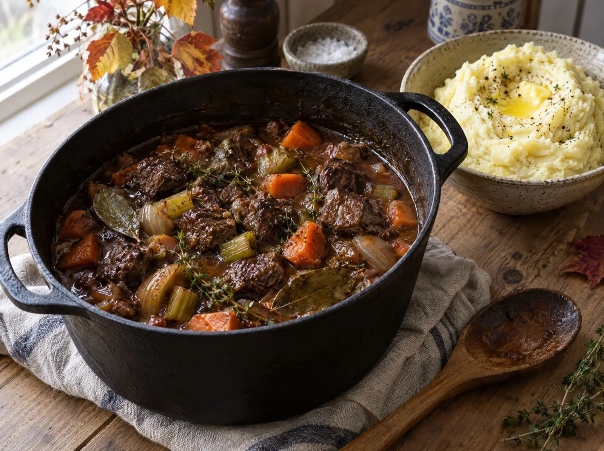
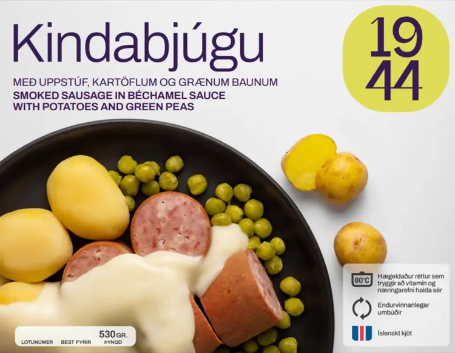
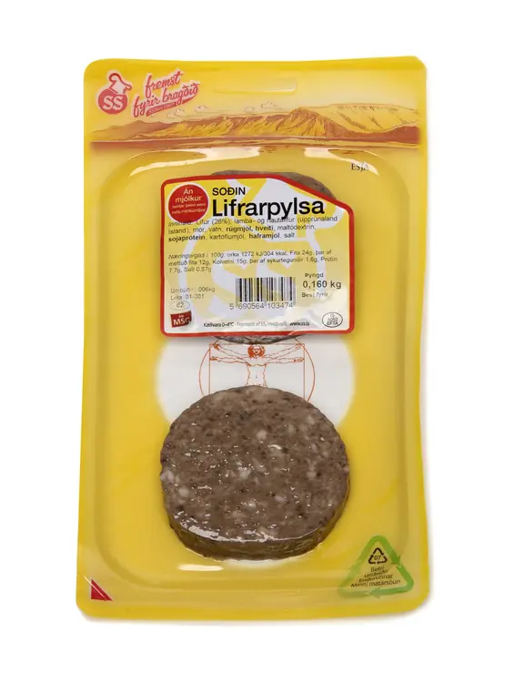
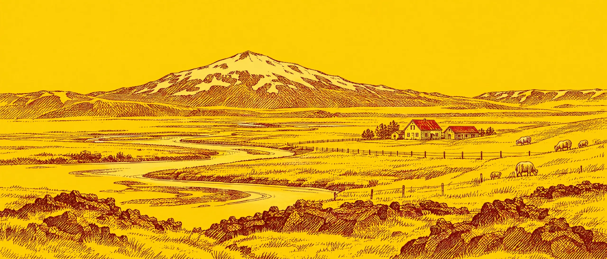

Haust með SS
Haustið er tími uppskeru og þá bjóðast neytendum afbragðs nýjar og ferskar kjötafurðir undir merkjum SS.

Í boði í haust
Á haustin er gott tækifæri til að njóta ferskleika og fjölbreyttra afurða íslenska fjallalambsins, eða búa sig undir veturinn með góðum forða af hollu og ódýru slátri.

Slátur og sláturgerðLifrarpylsa og blóðmör, tilbúin eða heimagerð úr þremur slátrum.
Ferskt lambakjötLæri, hryggur, file, lundir, gúllas og fleira af fjallalambinu.
Góð kaup í ferskum innmatLifur, hjörtu og nýru. Járnauðugur og ódýr matur.
Ferskt folaldakjötGúllas, lund, hakk, innralæri, snitsel og file.
Bjúgu og búðingarGamaldags heimilismatur: bjúgu, kjötbúðingur og kjötfars.
ÁleggSkinkur, hangiálegg, beikon og salamí frá SS og Búrfelli.Slátur er hollur, góður og ódýr matur
Slátur er hefðbundinn íslenskur matur sem er gerður úr innmat og blóði lamba. Slátur er haustmatur og er gerður í sláturtíðinni en fyrr á öldum og fram yfir miðja 20. öld fór sláturgerð fram á hverju heimili á Íslandi.
Þegar keypt er eitt slátur í verslun í sláturtíð inniheldur það mör, blóð, lifur, hjarta, nýru, próteinkeppi og sviðinn haus. Slátur er járn- og A vítamínríkur matur. Tilbúið og soðið slátur, bæði blóðmör og lifrarpylsa, fæst í verslunum árið um kring.
Lifrarpylsa
Á myndbandi SS sýna Margrét Sigfúsdóttir, skólastjóri Hússtjórnarskólans, og Guðmundur matreiðslumaður handtökin við sláturgerð. Þægilegt er að nota tilbúnar vambir. Þær þarf að leggja í bleyti í um hálfa klukkustund áður en sett er í þær og saumað eða nælt fyrir.
- Himnuhreinsið lifur og nýru með því að klæða þau úr himnunni.
- Maukið í matarvinnsluvél. Setjið lifrarhræruna í rúmgott fat, blandið vökva, salti og haframjöli saman við.
- Látið standa í um 5 mínútur á meðan saltið leysist upp og haframjölið blotnar.
- Hrærið rúgmjöli og mör saman við og passið að hafa hræruna ekki of þykka. Lifrarhræran er höfð þykkari en blóðmörshræran. Gott er að setja örlítinn sykur út í hræruna, 1-2 tsk.
- Hálffyllið keppina og saumið fyrir með bómullargarni. Pikkið með nál og setjið út í sjóðandi vatn, sjóðið í 2 ½ klukkutíma. Athugið að salta vatnið.
Blóðmör Möggu
Hver vill ekki eiga nóg af blóðmör og lifrarpylsu í frystikistunni áður en vetur gengur í garð? Einu slátri fylgir: sviðahaus, 2 nýru, lifur, hjarta, mör, frosið blóð, vömb og keppur.
- Sigtið blóðið og blandið vatni og salti út í ásamt haframjölinu. Látið standa í smá stund á meðan saltið leysist upp og haframjölið blotnar.
- Setjið rúgmjölið út í ásamt mör og hrærið á meðan. Varist að gera hræruna of þykka.
- Felið upp, það er setjið hræruna í keppina. Hafið þá rúmlega hálfa og saumið fyrir.
- Pikkið með nál lítil göt á hvern kepp og setjið í sjóðandi vatn með salti. Sjóðið í 2 ½ klst.
- Það slátur sem á að frysta er sett í frystipoka. Gott ráð er að hafa pokana flata á bökunarplötu, loka vel og setja strax í frost.
Fleiri uppskriftir haustsins
Úr haustvefnum. Opnaðu uppskrift til að sjá hráefni og aðferð.
Hráefni:
- 1 kg súpukjöt, lambakjöt (hryggur eða frampartur, með beini)
- 2 ½ l vatn
- Salt og pipar
- 1 laukur, grófskorinn
- 2 gulrætur
- 1 meðalstór rófa
- 6 meðalstórar kartöflur
- ½ hvítkálshaus, grófskorinn
- ½ dl bygg (til að þykkja soðið)
- Fersk steinselja eða blóðberg
Aðferð:
- Setjið kjötið í stóran pott, hellið vatninu yfir og saltið. Látið suðuna koma upp og fleytið froðuna af.
- Látið sjóða rólega í 45 mínútur með heilum piparkornum og lauknum.
- Skerið í bita og bætið gulrótum, rófu og kartöflum í pottinn og látið malla áfram í um 20-30 mínútur. Setjið hvítkálið og byggið út í síðast.
- Smakkið til með salti og pipar. Berið fram með brauði með miklu smjöri.
Hráefni:
- Heilt lambalæri
- Fjallagrös eða íslenskar kryddjurtir
- 2 msk bláberjasulta (sykurlaus)
- 1 dl bláber
- Hvítlaukur
- Salt, pipar og ólífuolía
- Kartöflur og villisveppir
Aðferð:
- Gatið lærið á stöku stað og stingið hvítlauk inn í.
- Nuddið með fjallagrösum, bláberjaþykkni, bláberjum og kryddi.
- Látið standa í 1-2 klst eða yfir nótt.
- Eldið í ofni við 160°C í 2,5-3 klst.
- Penslið reglulega og bætið vökva eftir þörfum. Berið fram með kartöflum, villisveppum og rjómasósu úr soðinu.
Hráefni:
- 1,5 kg nautagúllas eða framhryggur (skorinn í bita)
- 2 msk smjör til steikingar
- 2 stórir laukar, saxaðir
- 3 gulrætur, skornar í sneiðar
- 2 sellerístilkar, saxaðir
- 2 msk hveiti (valkvætt, til að þykkja sósuna)
- 1-2 flöskur (330-500 ml) íslenskur handverksbjór eða maltöl
- 500 ml nautasoð
- 2 lárviðarlauf
- Þurrkaður timían
- 1 msk tómatpúrra
- Salt og pipar
Aðferð:
- Skerið kjötið í hæfilega munnbita. Kryddið eftir smekk.
- Brúnið kjötið í smjöri í þykkbotna potti og takið úr pottinum.
- Steikið lauk, gulrætur og sellerí, bætið tómatpúrru við og hrærið.
- Setjið kjötið aftur í pottinn. Stráið hveiti yfir og hrærið vel.
- Hellið bjórnum eða maltinu yfir og bætið við nautasoði. Kryddið.
- Látið malla í 3-4 klst. Bætið vökva ef þarf. Smakkið til og þykkið sósuna ef þarf. Berið fram með kartöflumús.
Lifur er hollur matur sem gott er að steikja með eplum eða kartöflumús. Gott er líka að bæta nýrum í réttinn. Fyrir 4-6.
Hráefni:
- 2 epli
- 1 kg lambalifur, hrá
- 3 msk hveiti
- ½ tsk svartur pipar
- ½ tsk salt
- 4 msk sojasósa
- 400 ml vatn eða eplasafi
Aðferð:
- Lifrin er skorin í hæfilega bita sem og eplin.
- Lifrin krydduð með salti og pipar og steikt með eplunum. Lifur er best ef hún er ekki alveg gegnumsteikt, örlítið bleik innst.
- Setjið 1-2 bolla af vatni út á pönnuna, hristið hveiti í smá vatni og hrærið út í. Hellið sojasósunni út í, hún gefur lit og kryddar sósuna.
Fyrir 4-6. Sviðasultan er skorin í sneiðar, grænmetið er skorið með grænmetisflysjara og kryddað með olíu og ediki, salti, pipar og kryddjurtum.
Hráefni:
- 1 stk. sviðasulta
- 100 ml olía
- 10 ml edik
- 200 g blandað grænmeti (rófur, gulrætur, steinseljurót)
- 20 stk. rúsínur
- Nokkur fræ eða hnetur
Sláturtíð 2026 stendur frá 8. september til 4. nóvember
Verðskrá kindakjöts vika fyrir viku, heimtökugjald og sláturpantanir á einum stað.
